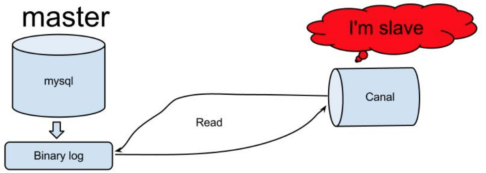
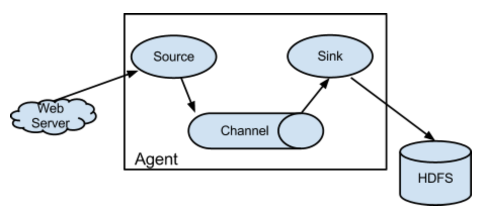
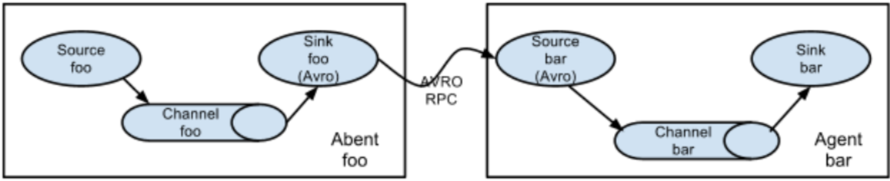
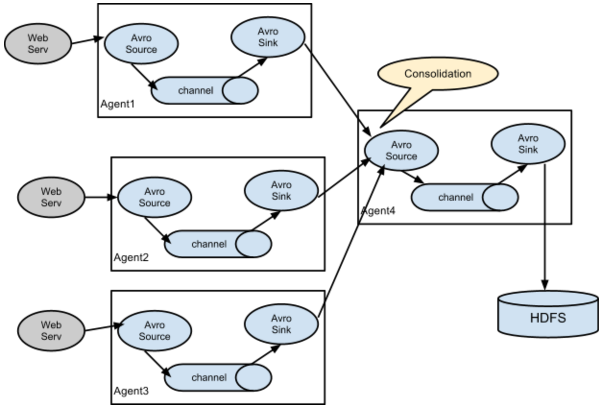

- 00 开篇词 为什么说每个软件工程师都应该懂大数据技术？.md.html
- 01 大数据技术发展史：大数据的前世今生.md.html
- 02 大数据应用发展史：从搜索引擎到人工智能.md.html
- 03 大数据应用领域：数据驱动一切.md.html
- 04 移动计算比移动数据更划算.md.html
- 05 从RAID看垂直伸缩到水平伸缩的演化.md.html
- 06 新技术层出不穷，HDFS依然是存储的王者.md.html
- 07 为什么说MapReduce既是编程模型又是计算框架？.md.html
- 08 MapReduce如何让数据完成一次旅行？.md.html
- 09 为什么我们管Yarn叫作资源调度框架？.md.html
- 10 模块答疑：我们能从Hadoop学到什么？.md.html
- 11 Hive是如何让MapReduce实现SQL操作的？.md.html
- 12 我们并没有觉得MapReduce速度慢，直到Spark出现.md.html
- 13 同样的本质，为何Spark可以更高效？.md.html
- 14 BigTable的开源实现：HBase.md.html
- 15 流式计算的代表：Storm、Flink、Spark Streaming.md.html
- 16 ZooKeeper是如何保证数据一致性的？.md.html
- 17 模块答疑：这么多技术，到底都能用在什么场景里？.md.html
- 18 如何自己开发一个大数据SQL引擎？.md.html
- 19 Spark的性能优化案例分析（上）.md.html
- 20 Spark的性能优化案例分析（下）.md.html
- 21 从阿里内部产品看海量数据处理系统的设计（上）：Doris的立项.md.html
- 22 从阿里内部产品看海量数据处理系统的设计（下）：架构与创新.md.html
- 23 大数据基准测试可以带来什么好处？.md.html
- 24 从大数据性能测试工具Dew看如何快速开发大数据系统.md.html
- 25 模块答疑：我能从大厂的大数据开发实践中学到什么？.md.html
- 26 互联网产品 + 大数据产品 = 大数据平台.md.html
- 27 大数据从哪里来？.md.html
- 28 知名大厂如何搭建大数据平台？.md.html
- 29 盘点可供中小企业参考的商业大数据平台.md.html
- 30 当大数据遇上物联网.md.html
- 31 模块答疑：为什么大数据平台至关重要？.md.html
- 32 互联网运营数据指标与可视化监控.md.html
- 33 一个电商网站订单下降的数据分析案例.md.html
- 34 A_B测试与灰度发布必知必会.md.html
- 35 如何利用大数据成为“增长黑客”？.md.html
- 36 模块答疑：为什么说数据驱动运营？.md.html
- 37 如何对数据进行分类和预测？.md.html
- 38 如何发掘数据之间的关系？.md.html
- 39 如何预测用户的喜好？.md.html
- 40 机器学习的数学原理是什么？.md.html
- 41 从感知机到神经网络算法.md.html
- 42 模块答疑：软件工程师如何进入人工智能领域？.md.html
- 所有的不确定都是机会——智慧写给你的新年寄语.md.html
- 第2季回归丨大数据之后，让我们回归后端.md.html
- 结束语 未来的你，有无限可能.md.html
- 捐赠
27 大数据从哪里来？
大数据就是存储、计算、应用大数据的技术，如果没有数据，所谓大数据就是无源之水、无本之木，所有技术和应用也都无从谈起。可以说，数据在大数据的整个生态体系里面拥有核心的、最无可代替的地位。很多从事机器学习和人工智能的高校学者选择加入互联网企业，并不是贪图企业给的高薪，而是因为只有互联网企业才有他们做研究需要用到的大量数据。
技术是通用的，算法是公开的，只有数据需要自己去采集。因此数据采集是大数据平台的核心功能之一，也是大数据的来源。数据可能来自企业内部，也可能是来自企业外部，大数据平台的数据来源主要有数据库、日志、前端程序埋点、爬虫系统。
从数据库导入
在大数据技术风靡之前，关系数据库（RDMS）是数据分析与处理的主要工具，我们已经在关系数据库上积累了大量处理数据的技巧、知识与经验。所以当大数据技术出现的时候，人们自然而然就会思考，能不能将关系数据库数据处理的技巧和方法转移到大数据技术上，于是Hive、Spark SQL、Impala这样的大数据SQL产品就出现了。
虽然Hive这样的大数据产品可以提供和关系数据库一样的SQL操作，但是互联网应用产生的数据却还是只能记录在类似MySQL这样的关系数据库上。这是因为互联网应用需要实时响应用户操作，基本上都是在毫秒级完成用户的数据读写操作，通过前面的学习我们知道，大数据不是为这种毫秒级的访问设计的。
所以要用大数据对关系数据库上的数据进行分析处理，必须要将数据从关系数据库导入到大数据平台上。上一期我提到了，目前比较常用的数据库导入工具有Sqoop和Canal。
Sqoop是一个数据库批量导入导出工具，可以将关系数据库的数据批量导入到Hadoop，也可以将Hadoop的数据导出到关系数据库。
Sqoop数据导入命令示例如下。
$ sqoop import --connect jdbc:mysql://localhost/db --username foo --password --table TEST
你需要指定数据库URL、用户名、密码、表名，就可以将数据表的数据导入到Hadoop。
Sqoop适合关系数据库数据的批量导入，如果想实时导入关系数据库的数据，可以选择Canal。
Canal是阿里巴巴开源的一个MySQL binlog获取工具，binlog是MySQL的事务日志，可用于MySQL数据库主从复制，Canal将自己伪装成MySQL从库，从MySQL获取binlog。

而我们只要开发一个Canal客户端程序就可以解析出来MySQL的写操作数据，将这些数据交给大数据流计算处理引擎，就可以实现对MySQL数据的实时处理了。
从日志文件导入
日志也是大数据处理与分析的重要数据来源之一，应用程序日志一方面记录了系统运行期的各种程序执行状况，一方面也记录了用户的业务处理轨迹。依据这些日志数据，可以分析程序执行状况，比如应用程序抛出的异常；也可以统计关键业务指标，比如每天的PV、UV、浏览数Top N的商品等。
Flume是大数据日志收集常用的工具。Flume最早由Cloudera开发，后来捐赠给Apache基金会作为开源项目运营。Flume架构如下。

从图上看，Flume收集日志的核心组件是Flume Agent，负责将日志从数据源收集起来并保存到大数据存储设备。
Agent Source负责收集日志数据，支持从Kafka、本地日志文件、Socket通信端口、Unix标准输出、Thrift等各种数据源获取日志数据。
Source收集到数据后，将数据封装成event事件，发送给Channel。Channel是一个队列，有内存、磁盘、数据库等几种实现方式，主要用来对event事件消息排队，然后发送给Sink。
Sink收到数据后，将数据输出保存到大数据存储设备，比如HDFS、HBase等。Sink的输出可以作为Source的输入，这样Agent就可以级联起来，依据具体需求，组成各种处理结构，比如下图的结构。

这是一个日志顺序处理的多级Agent结构，也可以将多个Agent输出汇聚到一个Agent，还可以将一个Agent输出路由分发到多个Agent，根据实际需求灵活组合。

前端埋点采集
前端埋点数据采集也是互联网应用大数据的重要来源之一，用户的某些前端行为并不会产生后端请求，比如用户在一个页面的停留时间、用户拖动页面的速度、用户选中一个复选框然后又取消了。这些信息对于大数据处理，对于分析用户行为，进行智能推荐都很有价值。但是这些数据必须通过前端埋点获得，所谓前端埋点，就是应用前端为了进行数据统计和分析而采集数据。
事实上，互联网应用的数据基本都是由用户通过前端操作产生的，有些互联网公司会将前端埋点数据当作最主要的大数据来源，用户所有前端行为，都会埋点采集，再辅助结合其他的数据源，构建自己的大数据仓库，进而进行数据分析和挖掘。
对于一个互联网应用，当我们提到前端的时候，可能指的是一个App程序，比如一个iOS应用或者Android应用，安装在用户的手机或者pad上；也可能指的是一个PC Web前端，使用PC浏览器打开；也可能指一个H5前端，由移动设备浏览器打开；还可能指的是一个微信小程序，在微信内打开。这些不同的前端使用不同的开发语言开发，运行在不同的设备上，每一类前端都需要解决自己的埋点问题。
埋点的方式主要有手工埋点和自动化埋点。
手工埋点就是前端开发者手动编程将需要采集的前端数据发送到后端的数据采集系统。通常公司会开发一些前端数据上报的SDK，前端工程师在需要埋点的地方，调用SDK，按照接口规范传入相关参数，比如ID、名称、页面、控件等通用参数，还有业务逻辑数据等，SDK将这些数据通过HTTP的方式发送到后端服务器。
自动化埋点则是通过一个前端程序SDK，自动收集全部用户操作事件，然后全量上传到后端服务器。自动化埋点有时候也被称作无埋点，意思是无需埋点，实际上是全埋点，即全部用户操作都埋点采集。自动化埋点的好处是开发工作量小，数据规范统一。缺点是采集的数据量大，很多数据采集来也不知道有什么用，白白浪费了计算资源，特别是对于流量敏感的移动端用户而言，因为自动化埋点采集上传花费了大量的流量，可能因此成为卸载应用的理由，这样就得不偿失了。在实践中，有时候只是针对部分用户做自动埋点，抽样一部分数据做统计分析。
介于手工埋点和自动化埋点之间的，还有一种方案是可视化埋点。通过可视化的方式配置哪些前端操作需要埋点，根据配置采集数据。可视化埋点实际上是可以人工干预的自动化埋点。
就我所见，在很多公司前端埋点都是一笔糊涂账。很多公司对于数据的需求没有整体规划和统一管理，数据分析师、商业智能BI工程师、产品经理、运营人员、技术人员都会在数据采集这里插一脚，却没有专门的数据产品经理来统一负责数据采集的规划和需求工作。很多需要的数据没有采集，更多没用的数据却被源源不断地被采集存储起来。
不同于业务需求，功能和价值大多数时候都是实实在在的。数据埋点需求的价值很多时候不能直观看到，所以在开发排期上往往被当作低优先级的需求。而很多埋点也确实最后没起到任何作用，加剧了大家这种印象。老板觉得数据重要，却又看不到足够的回报，也渐渐心灰意冷。
所以专业的事情需要专业对待，从安排专业的人专门负责开始。
爬虫系统
通过网络爬虫获取外部数据也是公司大数据的重要来源之一。有些数据分析需要行业数据支撑，有些管理和决策需要竞争对手的数据做对比，这些数据都可以通过爬虫获取。
对于百度这样的公开搜索引擎，如果遇到网页声明是禁止爬虫爬取的，通常就会放弃。但是对于企业大数据平台的爬虫，常常被禁止爬取的数据才是真正需要的数据，比如竞争对手的数据。被禁止爬取的应用通常也会采用一些反爬虫技术，比如检查请求的HTTP头信息是不是爬虫，以及对参数进行加密等。遇到这种情况，需要多花一点技术手段才能爬到想要的数据。
小结
各种形式的数据从各种数据源导入到大数据平台，进行数据处理计算后，又将数据导出到数据库，完成数据的价值实现。输入的数据格式繁杂、数据量大、冗余信息多，而输出的数据则结构性更好，用更少的数据包含了更多的信息，这在热力学上，被称作熵减。
熵是表征系统无序状态的一个物理学参量，系统越无序、越混乱，熵越大。我们这个宇宙的熵一刻不停地在增加，当宇宙的熵达到最大值的时候，就是宇宙寂灭之时。虽然宇宙的熵在不停增加，但是在局部，或者某些部分、某些子系统的熵却可以减少。
比如地球，似乎反而变得更加有序，熵正在减少，主要原因在于这些熵在减少的系统在吸收外部能量，地球在吸收太阳的能量，实现自己熵的减少。大数据平台想要实现数据的熵的减少，也必须要吸收外部的能量，这个能量来自于工程师和分析师的算法和计算程序。
如果算法和程序设计不合理，那么熵可能就不会下降多少，甚至可能增加。所以大数据技术人员在审视自己工作的时候，可以从熵的视角看看，是不是输出了更有价值、更结构化的数据，是不是用更少量的数据包含了更多的信息。
人作为一个系统，从青壮到垂老，熵也在不停增加。要想减缓熵增的速度，必须从外部吸收能量。物质上，合理饮食，锻炼身体；精神上，不断学习，参与有价值的工作。那些热爱生活、好好学习、积极工作的人是不是看起来更年轻，而整日浑浑噩噩的人则老得更快。
思考题
前面提到，爬虫在采集数据的时候，可能会遇到对方的反爬虫策略，反爬虫策略有哪些？如何应对这些反爬虫策略？
欢迎你点击“请朋友读”，把今天的文章分享给好友。也欢迎你写下自己的思考或疑问，与我和其他同学一起讨论。
© 2019 - 2023 Liangliang Lee. Powered by gin and hexo-theme-book.